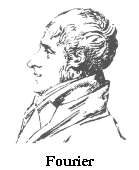

Jean Baptiste Joseph Fourier
geboren 1768 in Auxerre, gestorben 1830 in Paris.
Er führte ein bewegtes Leben in der Zeit der französischen Revolution, der napoleonischen Herrschaft und der Restauration. Fourier war der Sohn eines armen Schneiders, besuchte zuerst eine Militär-, dann eine Ordensschule. Während der Revolution in Auxerre war er abwechselnd Gefangener und Präsident des Revolutionskomitees. Mit Napoleon ging er nach Ägypten, wurde nach Napoleons plötzlichem und heimlichem Rückzug von den Engländern gefangen gehalten, konnte aber mit den Expeditionsberichten nach Frankreich zurückkehren und wurde 1802 in Grenoble Präfekt des Departement Isère. Er vollendete die lange vergeblich versuchte Trockenlegung der Sümpfe bei Lyon und rottete dadurch dort die Malaria aus. Er verfasste die historische Einleitung zum Expeditionsbericht "Description de l'Egypte". Die Absetzung und die vorübergehende Rückkehr Napoleons stürzten ihn in neue Schwierigkeiten. 1816 erhob Ludwig 18. bei Fouriers Wahl in die Académie des Sciences zunächst Einspruch. Schliesslich aber wurde Fourier 1822 ständiger Sekretär der Académie.
Seit 1807 beschäftigte sich Fourier mit dem Problem der Wärmeleitung. 1822 erschien seine "Théorie analytique de la chaleur". Von da ab waren Temperatur und Wärmetransport berechenbar, dabei halfen Fourierreihen und Fourierintegrale. Anfangs hatte Fourier Schwierigkeiten, seine Theorie gegen Einwände von Laplace, Poisson und Biot zu behaupten.
Ausser Franz Neumann und Lord Kelvin waren später Heaviside und Hamilton von Fouriers Buch begeistert, Hamilton stellte ihn über Lagrange, Laplace, Cauchy und Poisson [Whittaker 1951, 1, 130]. Heutzutage werden Fouriertechniken in allen Zweigen der Naturwissenschaften angewandt. Fourier begründete auch die physikalische Dimensionsanalyse. 1831 wurde sein Buch "Analyse des équations déterminées" postum von Navier herausgegeben ("Die Auflösung der bestimmten Gleichungen" dtsch. Ostwalds Klassiker Nr.127).
Literatur:
Arago schrieb seine Gedächtnisrede 1833 auf Grund seiner langjährigen Bekanntschaft,
Herivel seine Biographie [1975] auf Grund sorgfältiger historischer Studien.